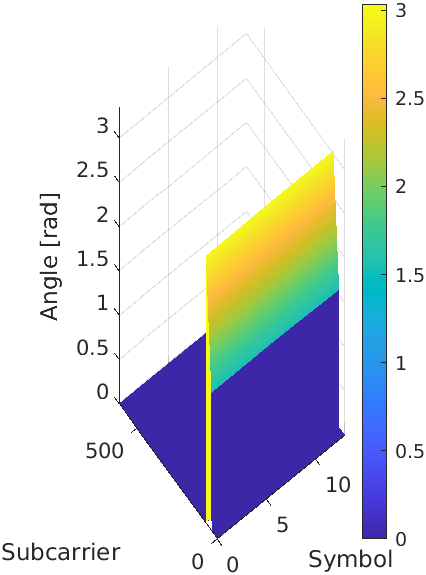
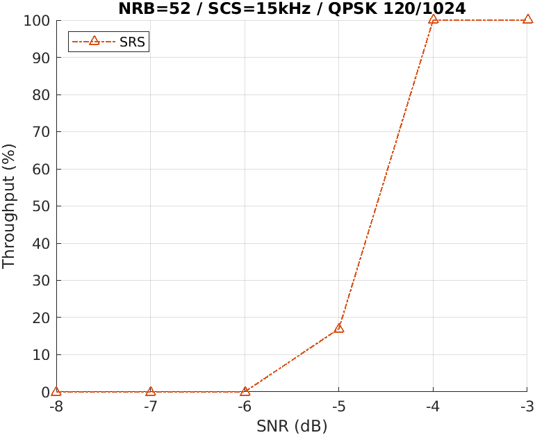
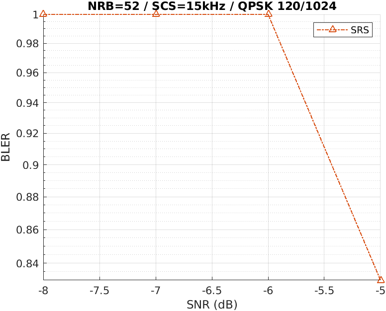

MATLAB 测试工具
概述
本教程解释了主要功能 srsRAN-matlab，一个基于 MATLAB 的测试项目 srsRAN Project。更具体地说，本教程将展示如何为 srsRAN 生成一组新的测试向量 项目测试，如何分析srsRAN gNB记录的上行IQ样本，以及如何端到端运行， 用于测试 srsRAN Project 的 PHY 组件的链路级仿真。这将在三个独立的部分中完成。
srsRAN-matlab 提供三个主要工具：测试向量生成器、上行链路分析器和链路级模拟器。
测试向量生成
测试向量主要用于测试、开发和调试srsRAN Project的PHY组件。本教程将展示 如何生成用于 srsRAN 存储库内的单元测试的向量集。以及概述如何生成 用于扩大测试范围的新随机向量集。
信号分析仪
信号分析仪可用于测试 gNB 的上行链路。具体来说，它们提供了有关 上行链路时隙中的信号质量。
模拟器
模拟器可用于估计不同配置和信道下 PHY 上行链路信道的性能 MATLAB 的 3GPP 兼容模型提供的条件。
设置注意事项
本应用笔记使用以下硬件和软件：
装有 Ubuntu 22.04.3 LTS 的 PC
注意事项
运行 srsRAN-matlab 测试套件需要 MATLAB 及其 5G 工具箱的工作副本
安装
假设srsRAN Project和MATLAB都已下载并安装，下一步是下载srsRAN-matlab。
这可以通过以下命令来完成：
git clone https://github.com/srsran/srsRAN_matlab.git
注意事项
本教程假设 srsRAN Project 安装在用户目录中。
下载后，srsRAN-matlab 的工作目录应添加到 MATLAB 的搜索路径中。这可以通过 MATLAB 控制台使用以下命令完成：
cd ~/srsRAN_matlab
addpath .
要验证您是否已成功将 srsRAN-matlab 添加到 MATLAB 的搜索路径，请运行以下命令（再次从 MATLAB 控制台）：
runtests('unitTests', Tag='matlab code')
如果成功，控制台输出的末尾应显示以下输出：
ans =
1x94 TestResult array with properties:
Name
Passed
Failed
Incomplete
Duration
Details
Totals:
94 Passed, 0 Failed, 0 Incomplete.
42.2176 seconds testing time.
srsRAN Project 的 PHY 组件通过向每个组件提供输入数据向量和
将结果输出与预期值进行比较。在 srsRAN Project 中，a 的测试向量
PHY组件通常由许多带有输入和输出数据的二进制文件以及一个共享头文件组成
描述测试设置和二进制文件的内容。二进制文件打包在一个 tarball 中。
例如，信道估计器的测试向量由文件提供 port_channel_estimator_test_data.h 和
port_channel_estimator_test_data.tar.gz 在 ~/srsRAN_Project/tests/unittests/phy/upper/signal_processors.
文件 srs<ComponentName>Unittest.m 在主目录中 srsRAN-matlab提供课程
生成此类 PHY 输入输出测试向量。这是通过利用 MATLAB 5G Toolbox 来完成的。这些类继承自
MATLAB matlab.unittest.TestCase 类，表示 MATLAB 单元内的所有工具
测试框架可以与它们一起使用。为了便于生成测试向量，简化的界面
随 srsRAN-matlab 提供。
要为所有 PHY 组件生成测试向量，需要从 MATLAB 控制台运行以下代码：
runSRSRANUnittest('all', 'testvector')
这将生成一个 .h 和 .tar.gz 每个 PHY 组件的文件并将它们放在文件夹中 ~/srsRAN_matlab/testvector_outputs..
还可以生成单个 PHY 组件的测试向量。这是通过替换来完成的 all 与所需的名称
组件，根据其声明 ~/srsRAN_Project/include/srsran/。例如，信道估计器的测试向量，
其接口声明于 ~/srsRAN_Project/include/srsran/phy/upper/signal_processors/port_channel_estimator.h, 可以是
使用以下命令生成：
runSRSRANUnittest('port_channel_estimator', 'testvector')
一旦生成了测试向量， .h 和 tar.gz 文件在 testvector_outputs 文件夹
可以使用 MATLAB 命令传输到 srsRAN Project 文件夹：
srsTest.copySRStestvectors('testvector_outputs', '~/srsRAN_Project/')
该命令将自动将所有测试向量复制到内部正确的子目录中 ~/srsRAN_Project/tests/unittests/phy.
默认情况下，执行 runSRSRANUnittest 将重现与提供的测试向量相同的测试向量
srsRAN Project 存储库。要生成一组随机向量，我们只需添加 RandomShuffle
选项。这可以通过以下命令来完成：
runSRSRANUnittest('all', 'testvector', RandomShuffle=true)
srsRAN-matlab提供了一些工具来分析srsRAN gNB接收到的信号并帮助调试上行通道。这些
可以在 apps/analyzers。在本教程中，我们将重点关注 PUSCH 传输的分析器；对于另一个
分析器非常相似，请按照其帮助文本中的说明进行操作。
下面显示了一些其他分析器选项：
% The Resource Grid analyzers only plots the energy map of a slot.
>> help srsResourceGridAnalyzer
% For analyzing PUCCH transmissions.
>> help srsPUCCHAnalyzer
% For analyzing PRACH transmissions.
>> help srsPRACHAnalyzer
要使用 PUSCH 分析器，需要将 gNB 配置为收集 IQ 样本。这可以通过添加以下内容来完成 gNB配置文件：
log:
filename: /tmp/gnb.log # save the log to a specified file
phy_level: debug # debug log level for PHY layer set to debug
phy_rx_symbols_filename: /tmp/iq.bin # save IQ samples to a specified file
然后 gNB 就可以正常运行。然后将生成 IQ 样本。这可以通过以下命令来完成：
sudo ./gnb -c config.yml
注意事项
生成的 IQ 样本将占用大量磁盘空间。建议不要在此配置下运行gNB太长时间。
运行gNB后，打开 gnb.log 并定位要分析的 PUSCH 传输。以下示例显示了 PUSCH 传输
本教程中分析：
2023-10-08T19:14:54.738749 [Upper PHY] [I] [ 690.17] RX_SYMBOL: sector=0 offset=79705 size=8568
2023-10-08T19:14:54.738854 [UL-PHY1 ] [D] [ 690.17] PUSCH: rnti=0x4601 h_id=0 prb=[3, 6) symb=[0, 14) mod=QPSK rv=0 tbs=11 crc=OK iter=1.0 sinr=20.1dB t=182.0us
rnti=0x4601
h_id=0
bwp=[0, 51)
prb=[3, 6)
symb=[0, 14)
oack=0
ocsi1=0
part2=entries=[]
alpha=0.0
betas=[0.0, 0.0, 0.0]
mod=QPSK
tcr=0.1171875
rv=0
bg=2
new_data=true
n_id=1
dmrs_mask=00100001000100
n_scr_id=1
n_scid=false
n_cdm_g_wd=2
dmrs_type=1
lbrm=3168bytes
slot=690.17
cp=normal
nof_layers=1
ports=0
dc_position=306
crc=OK
iter=1.0
max_iter=1
min_iter=1
nof_cb=1
sinr_ch_est=26.9dB
sinr_eq=23.9dB
sinr_evm[sel]=20.1dB
evm=0.06
epre=+22.7dB
rsrp=+22.7dB
t_align=-0.2us
找到并选择传输后，其描述可用于填充 srsRAN-matlab 分析器中的配置选项。
从 MATLAB 控制台运行以下命令：
cd apps/analyzers
[carrier, pusch, extra] = srsParseLogs
然后您将看到以下输出：
Copy the relevant section of the logs to the system clipboard (typically select and Ctrl+C), then switch back to MATLAB and press any key.
Parsing the following log section:
然后，您应该从日志文件中复制所选的 PUSCH 传输详细信息，并将其直接粘贴到 MATLAB 控制台中。输出应如下所示：
2023-10-08T19:14:54.738854 [UL-PHY1 ] [D] [ 690.17] PUSCH: rnti=0x4601 h_id=0 prb=[3, 6) symb=[0, 14) mod=QPSK rv=0 tbs=11 crc=OK iter=1.0 sinr=20.1dB t=182.0us
rnti=0x4601
h_id=0
bwp=[0, 51)
prb=[3, 6)
symb=[0, 14)
oack=0
ocsi1=0
part2=entries=[]
alpha=0.0
betas=[0.0, 0.0, 0.0]
mod=QPSK
tcr=0.1171875
rv=0
bg=2
new_data=true
n_id=1
dmrs_mask=00100001000100
n_scr_id=1
n_scid=false
n_cdm_g_wd=2
dmrs_type=1
lbrm=3168bytes
slot=690.17
cp=normal
nof_layers=1
ports=0
dc_position=306
crc=OK
iter=1.0
max_iter=1
min_iter=1
nof_cb=1
sinr_ch_est=26.9dB
sinr_eq=23.9dB
sinr_evm[sel]=20.1dB
evm=0.06
epre=+22.7dB
rsrp=+22.7dB
t_align=-0.2us
该函数将显示确认日志并询问子载波间隔和资源网格中的 RB 数量：
Do you want to continue? [Y]/N y
Subcarrier spacing in kHz: 30
Grid size as a number of RBs: 51
最后， srsParseLogs 返回一个 nrCarrierConfig 对象， 载体，一个 nrPUSCHConfig 对象， 普施，以及 额外的结构与
有关 PUSCH 传输块的附加信息。它应该如下所示：
carrier =
nrCarrierConfig with properties:
NCellID: 1
SubcarrierSpacing: 30
CyclicPrefix: 'normal'
NSizeGrid: 51
NStartGrid: 0
NSlot: 17
NFrame: 690
Read-only properties:
SymbolsPerSlot: 14
SlotsPerSubframe: 2
SlotsPerFrame: 20
pusch =
nrPUSCHConfig with properties:
NSizeBWP: 51
NStartBWP: 0
Modulation: 'QPSK'
NumLayers: 1
MappingType: 'A'
SymbolAllocation: [0 14]
PRBSet: [3 4 5]
TransformPrecoding: 0
TransmissionScheme: 'nonCodebook'
NumAntennaPorts: 1
TPMI: 0
FrequencyHopping: 'neither'
SecondHopStartPRB: 1
BetaOffsetACK: 20
BetaOffsetCSI1: 6.2500
BetaOffsetCSI2: 6.2500
UCIScaling: 1
NID: 1
RNTI: 17921
NRAPID: []
DMRS: [1x1 nrPUSCHDMRSConfig]
EnablePTRS: 0
PTRS: [1x1 nrPUSCHPTRSConfig]
extra =
struct with fields:
RV: 0
TargetCodeRate: 0.1172
TransportBlockLength: 88
dcPosition: 306
最后一步是运行 PUSCH 分析器，提供刚刚创建的对象作为输入 srsParseLogs,
IQ 记录的路径、槽的偏移量和长度（均表示为 IQ 样本的数量）。
槽的偏移量和长度都可以在日志文件中的一行中找到，如下所示
2023-10-08T19:14:54.738749 [Upper PHY] [I] [ 690.17] RX_SYMBOL: sector=0 offset=79705 size=8568
注意事项
插槽 ID ([ 690.17] 在我们的示例中）应与 PUSCH 日志相同。
从 MATLAB 控制台运行 PUSCH 分析器的命令是：
srsPUSCHAnalyzer(carrier, pusch, extra, '/tmp/iq.bin', 79705, 8568)
The block CRC is OK.
然后，这应该输出显示时隙能量分布、估计信道的幅度、相位的数据 估计的信道、均衡的星座和接收的软比特分布。
下图显示了这些：
时隙能量分布 |
估计通道的幅度 |
估计信道的相位 |
|---|---|---|

|

|
 |
{kind=link}

|

|
此示例演示如何使用 srsRAN-matlab 模拟器测试 srsRAN gNB 自己的 PUSCH 处理器的吞吐量和 BLER 性能。利用 MATLAB 的 5G 工具箱 我们可以构建一种尽可能接近 3GPP 一致性测试所需的模拟设置（请参阅 TS38.104 和 TS38.141）。虽然不完全具有代表性 通过 RU 和无线传输的实际部署，这些模拟对于获得系统性能的初步估计非常有用。
编译 MEX
将 srsRAN Project PHY 模块包含到 MATLAB 模拟器中是通过以下方式实现的 墨西哥 功能，它们是可以从 MATLAB 调用的小型 C++ 库。因此，跑步的第一步 srsRAN-matlab 模拟器用于构建 MEX 可执行文件。
首先，我们用以下命令编译 srsRAN ProjectENABLE_EXPORT 标志，导出（部分）其库以供外部使用
项目。可以使用以下命令从命令行完成此操作：
cd ~/srsRAN_Project
cmake -B buildExport -DENABLE_EXPORT:BOOL=ON
cmake --build buildExport -j 'nproc'
这会在内部构建 srsRAN Project buildExport 并生成文件buildExport/srsran.cmake，其中
提供从外部项目导入必要的 srsRAN CMake 目标所需的所有详细信息。
注意事项
的 ENABLE_EXPORT flag 意味着生成与位置无关的代码（带有 -fPIC 编译器选项） - 作为
因此，您在运行 gNB 时可能会遇到性能下降的情况。
现在应该为 srsRAN-matlab 构建 MEX 库。从命令行运行以下命令：
cd ~/srsRAN_matlab/+srsMEX/source
cmake -B buildMEX -DSRSRAN_BINARY_DIR:PATH="~/srsRAN_Project/buildExport" -DMatlab_ROOT_DIR:PATH="/path/to/MATLAB/R2023a"
cmake --build buildMEX -j 'nproc'
要检查上述内容是否成功运行，请从主 srsRAN-matlab 目录执行以下命令：
runtests('unitTests', Tag='mex code')
这应该输出以下内容或类似内容：
ans =
1x45 TestResult array with properties:
Name
Passed
Failed
Incomplete
Duration
Details
Totals:
6 Passed, 0 Failed, 39 Incomplete.
14.7124 seconds testing time.
然后您可以运行：
runSRSRANUnittest('all', 'testmex')
如果成功的话， runSRSRANUnittest 将生成测试向量，这些向量将被馈送到 srsRAN Project PHY 组件的 MEX 版本中。将显示类似于以下内容的输出：
Failure Summary:
Name Failed Incomplete Reason(s)
==========================================================================================================================================================================================================================================
srsPRACHDetectorUnittest[RandomDefault=true#ext,outputPath=_home_david_Code_MATLAB_srsgnb_matlab_testvector_outputs#ext]/mexTest(DuplexMode=FDD,PreambleFormat=1,UseZCZ=false,nAntennas=1) X Filtered by assumption.
------------------------------------------------------------------------------------------------------------------------------------------------------------------------------------------------------------------------------------------
srsPRACHDetectorUnittest[RandomDefault=true#ext,outputPath=_home_david_Code_MATLAB_srsgnb_matlab_testvector_outputs#ext]/mexTest(DuplexMode=FDD,PreambleFormat=1,UseZCZ=false,nAntennas=2) X Filtered by assumption.
------------------------------------------------------------------------------------------------------------------------------------------------------------------------------------------------------------------------------------------
...
srsPRACHDetectorUnittest[RandomDefault=true#ext,outputPath=_home_david_Code_MATLAB_srsgnb_matlab_testvector_outputs#ext]/mexTest(DuplexMode=TDD,PreambleFormat=A1,UseZCZ=true,nAntennas=2) X Filtered by assumption.
------------------------------------------------------------------------------------------------------------------------------------------------------------------------------------------------------------------------------------------
srsPRACHDetectorUnittest[RandomDefault=true#ext,outputPath=_home_david_Code_MATLAB_srsgnb_matlab_testvector_outputs#ext]/mexTest(DuplexMode=TDD,PreambleFormat=A1,UseZCZ=true,nAntennas=4) X Filtered by assumption.
仅在哪里 Incomplete 测试应该显示。如果测试显示为 Failed 发生错误。
运行 PUSCH 模拟器
在 MATLAB 控制台中，可以从主 srsRAN-matlab 目录创建模拟器对象，如下所示：
cd apps/simulators/PUSCHBLER
sim = PUSCHBLER
这应该给出以下输出：
sim =
PUSCHBLER with properties:
Configuration
NCellID: 1
RNTI: 1
SubcarrierSpacing: 15
CyclicPrefix: 'Normal'
NSizeGrid: 52
PRBSet: [0 1 2 3 4 5 6 7 8 9 10 ... ]
SymbolAllocation: [0 14]
MappingType: 'A'
DMRSConfigurationType: 1
DMRSLength: 1
DMRSAdditionalPosition: 1
DMRSTypeAPosition: 2
MCSTable: 'qam64'
MCSIndex: 0
NRxAnts: 1
NTxAnts: 1
NumLayers: 1
DelayProfile: 'AWGN'
PerfectChannelEstimator: true
EnableHARQ: false
ImplementationType: 'matlab'
QuickSimulation: true
DisplaySimulationInformation: false
DisplayDiagnostics: false
现在，用户可以根据需要修改模拟设置。特别是， ImplementationType 应该改为 srs。做事
因此允许使用 srsRAN Project 的 PHY 组件（通过上面的 MEX 库），而不是 MATLAB 5G 工具箱中的组件。
这可以通过以下命令来完成：
sim.ImplementationType = 'srs'
然后可以运行仿真来评估 PUSCH 传输的吞吐量和 BLER。这可以通过运行来完成 sim([SNR Range], [# Frames])。示例模拟可能如下所示：
sim(-8:-3, 10)
然后可以使用以下命令绘制生成的吞吐量和 BLER 估计：
sim.plot()
这将给出以下输出：
 |
 |
{kind=link}
{kind=link}